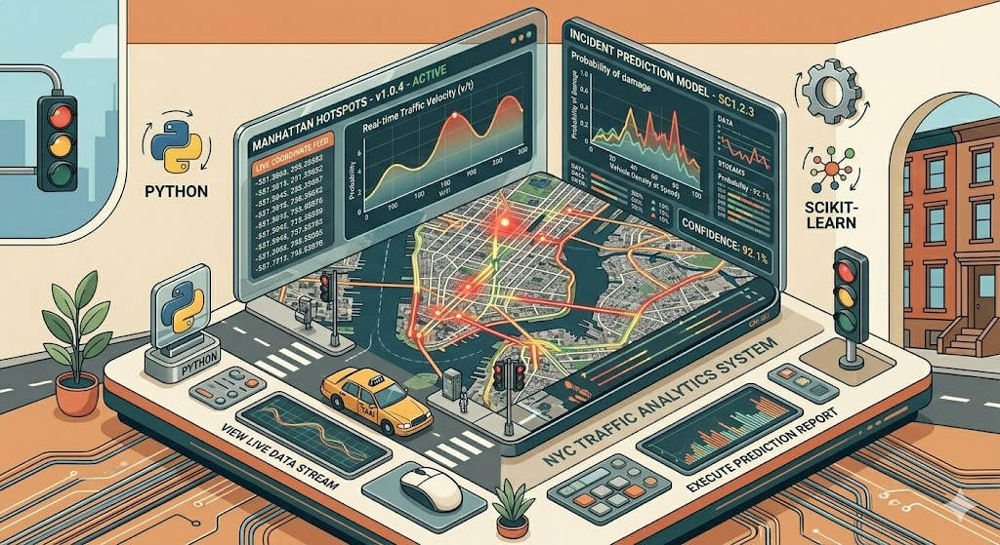
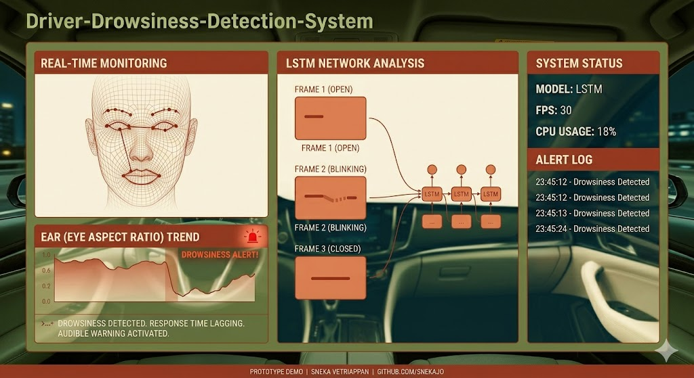
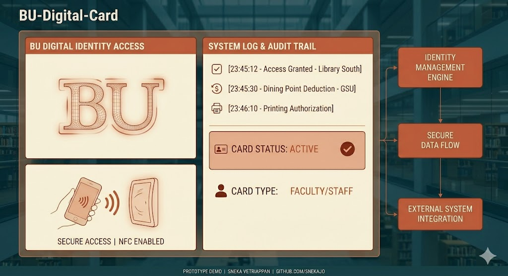
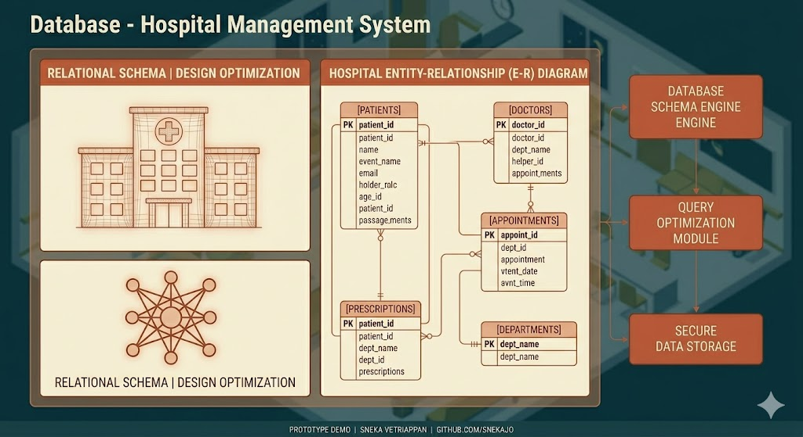

Hi, I am Sneka Vetriappan
Data & Systems Analyst
Systems & Data Analyst with 5+ years of experience building reliable management platforms and automated data pipelines. Proficient in SQL, Python, R, and Java, I specialize in process optimization, API testing, and creating real-time dashboards in Tableau. From managing global DevOps workflows to engineering "single source of truth" data models, I focus on transforming fragmented technical requirements into scalable, user-centric solutions.
Projects

Driver Drowsiness Detection
Engineered a real-time computer vision pipeline using CNNs and LSTM networks to monitor driver fatigue and trigger automated safety alerts.
- Python
- TensorFlow
- OpenCV
- LSTM

NYC Collision Prediction
Developed an end-to-end pipeline to process NYC Open Data, using predictive modeling to identify high-risk accident factors and damage severity.
- Python
- Scikit-Learn
- Pandas

BU Digital Card
A responsive digital identity application designed to streamline professional networking with a focus on clean UI/UX.
- React
- JavaScript
- CSS3

Hospital Management System
Designed a relational database for healthcare operations with complex SQL scripts for data normalization and ETL logic.
- SQL
- Oracle
- Database Design
Skills
- SQL
- Python
- R
- API Testing
- Process Optimization
- Tableau
- Looker
- Azure DevOps
- ETL Pipelines
- Technical SOPs
- Automation
- Data Modeling
- Git